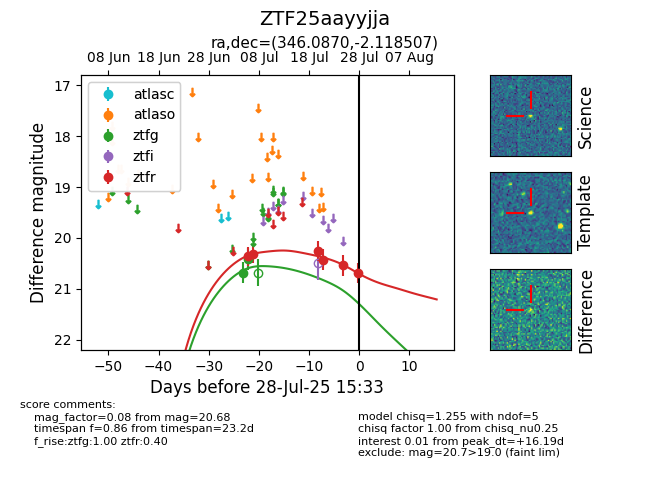

Target ZTF25aayyjja at 2025-07-28 15:33, see:
FINK: fink-portal.org/ZTF25aayyjja
Lasair: lasair-ztf.lsst.ac.uk/objects/ZTF25aayyjja
ALeRCE: alerce.online/object/ZTF25aayyjja
alt names
ZTF25aayyjja (ztf,fink)
coordinates:
equatorial (ra, dec) = (346.0870,-2.11851)
galactic (l, b) = (72.6479,-54.18363)
photometry
last ztfg=20.41, ztfr=20.68
2 ztfg, 6 ztfr detections
